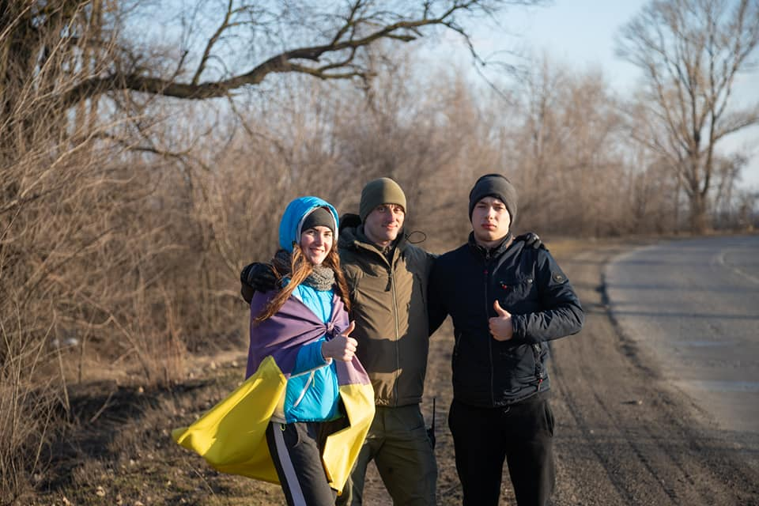

Пройшли пішки найдовше місто Європи. У Кривому Розі екстремали пройшли 90 км міста за майже добу
Семеро учасників пішого марафону стартували опівночі 7-го березня від крайньої північної точки Кривого Рогу. У складі команди – шестеро чоловіків та одна дівчина. Ініціатор марафону, блогер та екстремал Микола Єрошкін, говорить: самі кинули собі виклик – подолати майже 90 кілометрів за добу. «Це перевірка самих себе, своїх можливостей та здібностей», вважає він.